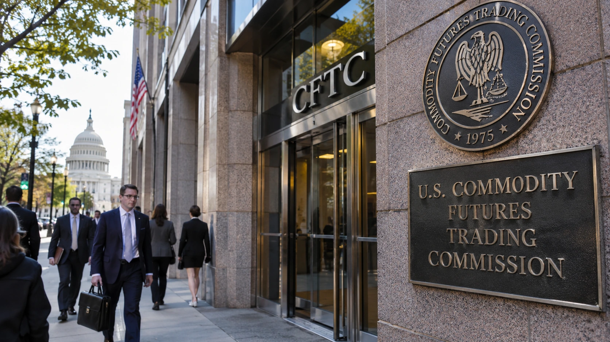

Coinbase and Kalshi Back CFTC in Legal Fight Over Stock Perpetual Futures
Coinbase, Kalshi and several trading firms seek to support the CFTC in litigation testing the U.S. regulatory pathway for single-stock perpetual futures.

Coinbase, Kalshi, Payward and several financial trading companies have asked a federal court for permission to support the Commodity Futures Trading Commission in a dispute over perpetual derivatives linked to individual U.S. stocks. The proposed friend-of-the-court filing, submitted November 9 and reported November 10, highlights a developing contest over whether a trading structure familiar from cryptocurrency exchanges can fit within the American regulatory framework for security futures. The litigation is not a ruling that the proposed products are lawful or unlawful.
The challenge to equity perpetual futures
The dispute is before the U.S. District Court for the Southern District of New York. A group known as the Capital Markets Alliance Association challenged the CFTC's treatment of applications relating to stock-linked perpetual contracts. The association argues that the instruments should be classified as security-based swaps rather than security futures. That distinction could determine whether the exchanges can rely on the regulatory pathway they used, and which federal agencies have authority over the products.
Coinbase, Kalshi and Payward were joined by DRW Holdings, Jump Trading and Paradigm in seeking leave to file a supporting brief. The companies argue that a perpetual contract does not necessarily cease to be a futures instrument simply because it lacks a fixed expiration date. Their account also emphasizes the role of both the CFTC and Securities and Exchange Commission in the security-futures framework. These are legal arguments advanced by interested participants, not independent findings by the court.
According to the proposed filing, applications by Coinbase-related entities, Kalshi and Bitnomial to list certain equity perpetuals were deemed approved on November 2. The Capital Markets Alliance Association is contesting that approach. The federal court had earlier denied a request for a temporary restraining order on November 3. That decision concerned immediate relief and did not settle the ultimate legal classification, which remains a central issue in the case.
How perpetual contracts work
A conventional futures contract ordinarily specifies an expiration or settlement date. Traders who want to retain their exposure for longer must often close one contract and enter another. Perpetual futures are designed to continue without that scheduled expiration. A funding mechanism may periodically transfer money between long and short positions to keep the contract price near its underlying reference value.
Perpetual contracts have become common in cryptocurrency markets, where some traders use them to maintain leveraged exposure to Bitcoin, Ether and other assets. Their appeal is partly operational: traders do not need to roll a contract every month or quarter. But a contract without an expiration date is not a risk-free way to hold an investment. Funding payments can accumulate, and leverage can create rapid losses or trigger forced liquidation during volatile trading.
A single-stock perpetual would provide economic exposure to a company's stock price without necessarily giving the trader any ownership interest in that company. It should not be confused with holding shares in a brokerage account. Corporate voting rights, dividend treatment, contract settlement, funding and margin requirements depend on the actual exchange rules. The difference matters because an investor may see a familiar stock name but hold a derivative with materially different obligations and risks.
The regulatory dividing line
The SEC generally supervises securities markets, while the CFTC oversees many futures and derivatives markets. Security futures occupy a specially defined area requiring coordination between the two agencies. Security-based swaps operate under another framework. The legislation and rules governing those instruments are detailed, and product characteristics can alter the analysis. The lawsuit is therefore about market access as well as classification.
If the products fit within the security-futures framework, domestic platforms may have a path to listing them under the relevant registration and supervisory obligations. If the challengers prevail, the proposed contracts could need a different legal structure or approval process. A final outcome could influence exchange competition, clearing arrangements, customer protections and the availability of new derivatives to U.S. market participants.
For companies such as Coinbase, the case also fits a broader expansion beyond spot cryptocurrency transactions. Digital-asset trading venues increasingly seek to offer regulated derivatives and financial infrastructure. Coinbase's application involving a national trust-bank charter is a separate development, but it reflects a similar interest in building services that connect cryptocurrency businesses with conventional U.S. finance.
Why market participants are watching
Liquidity providers and trading firms have an interest in how these products are regulated because clear rules affect where orders can be placed, how trades are cleared and what risks participants must finance. U.S. exchanges also compete with offshore platforms that already offer various perpetual structures. Supporters of domestic listings argue that regulated alternatives can offer a more transparent market environment, but greater oversight does not eliminate the possibility of sharp investor losses.
The industry coalition's composition is notable. Kalshi, Coinbase-related businesses and firms active in institutional trading do not share identical business models. Their involvement suggests the classification question has consequences for a wider group than a single exchange or product launch. The argument also connects to unresolved U.S. policy questions covered in TTN Finance's explanation of digital-asset market legislation, including the boundaries of agency authority and the obligations applied to intermediaries.
Traders should be careful not to interpret the word approved as an assurance that a contract is appropriate for every investor. Even if a listing can proceed, margin rules, volatility, financing payments and product design will shape the risks. Whether retail customers can access a particular product will also depend on the exchange and applicable regulatory restrictions.
What the court must decide
The immediate procedural question is whether the proposed amicus brief will be accepted and what relief, if any, should be granted while the case continues. The underlying dispute asks whether an open-ended stock derivative may be listed using the security-futures pathway claimed by the exchanges. The parties' differing views will need to be tested against the statutory definitions and regulatory record.
Whatever the eventual judgment, the case shows why technology borrowed from cryptocurrency markets can challenge long-standing legal categories when applied to traditional assets. The court is not being asked to decide whether perpetual contracts are commercially attractive; it is being asked to determine whether the relevant regulator and exchanges followed a lawful route. Until that question is resolved, the legal uncertainty remains a material factor for businesses hoping to bring stock perpetual futures into the U.S. market.